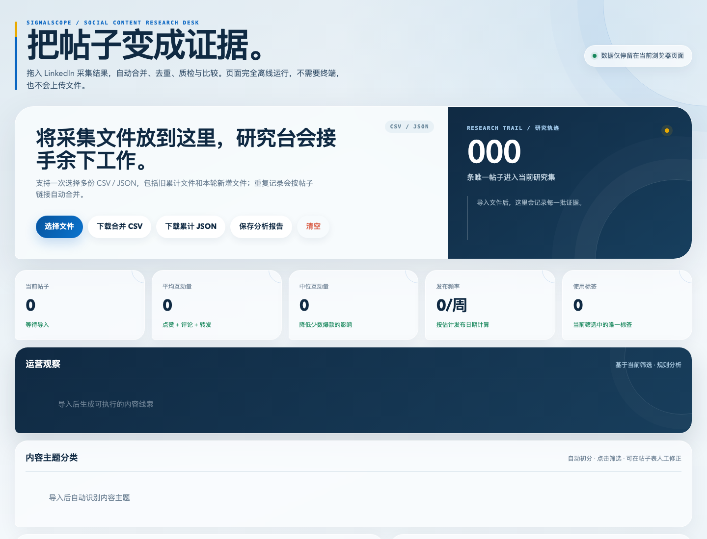

一直往下滑
公司发了几百上千篇帖子，想找早期内容，只能不停滚页面。
手酸 / 慢 / 容易中断做竞品内容研究时，我最烦这三件事
公司发了几百上千篇帖子，想找早期内容，只能不停滚页面。
手酸 / 慢 / 容易中断正文、日期、点赞、评论、链接，一个字段一个字段抄进表格。
机械 / 重复 / 很无聊多次采集容易重复，日期格式不统一，后面分析前还得再清洗。
容易漏 / 容易错 / 费时间轻量级，不接 API，不搞复杂配置
反复滚动帖子页面
→自动向下扫描，直到数量或日期边界
想找最早帖子只能硬滑
→查找最早帖子模式，持续扫描历史
逐条抄正文和互动数
→一次导出 CSV + JSON
中断后从头再来
→每 25 篇保存断点，可以继续
不同批次自己去重
→master 文件自动累计、自动去重
company-2026-07-23.csvcompany-2026-07-23.jsoncompany-master.json第一次用，先试 30 篇
确认你已经登录，并且页面里能正常看到公开帖子。
设置公司简称、日期范围和数量；页面右上角会显示进度。
自动合并、去重、筛选，对比主题、节奏和互动表现。
